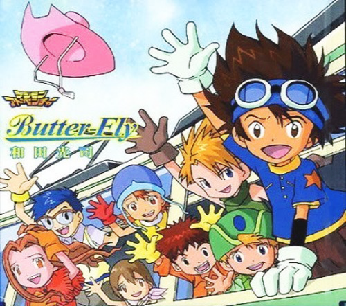

Kōji Wada (和田 光司, Wada Kōji, January 29, 1974 – April 3, 2016) was a Japanese pop singer. He was best known for performing theme songs for several installments of the Digimon anime television series, including his recording debut in 1999 with his first and most famous single, "Butter-Fly", the theme song of the anime Digimon Adventure. He was signed with the Lantis recording label. His nickname is "Immortal Butterfly Anisong Singer"
Who is Kōji Wada?
Wada had contributed songs to six of the seven Digimon anime series (with one of his songs reused for the seventh, to which he contributed no new songs), including opening themes for the first five of them. He also performed two songs used as ending themes for Digimon Frontier, "Innocent: Mujaki na Mama de" (イノセント～無邪気なままで～) and "an Endless Tale" (with AiM). He starred in various other songs for the series, such as "Bokura no Digital World" (the "memorial" theme for the Adventure series), "Yūki o Uketsugu Kodomo-tachi e" and also several Christmas songs. He also performed the theme song for Transformers: Robots in Disguise in Japan.
On October 4, 2011, Wada announced via his blog that he was putting his career on hold in order to deal with a sudden metastasized cancer which had previously seen treatment in 2003.
On April 3, 2016, Wada died suddenly from complications related to nasopharynx cancer. His last single, "Seven〜tri. Version〜", was released only five days prior to his death.
A CD tribute for Kōji Wada was released in Japan on July 31, 2016 under the name of "Digimon Song Best of Koji Wada." The CD includes a total of eleven tracks by the late singer. Additionally, the cover features Angemon, Wada's favourite character from the "Digimon" franchise. Another compilation, "Koji Wada Digimon Memorial Best", was released on January 25, 2017.